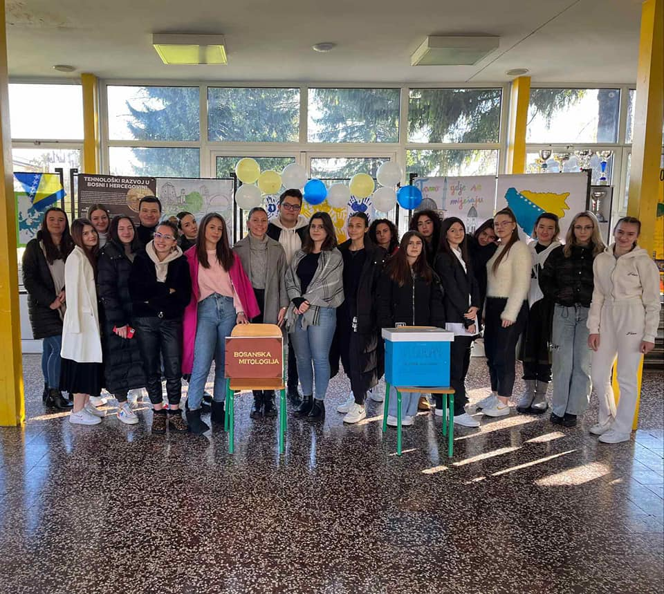
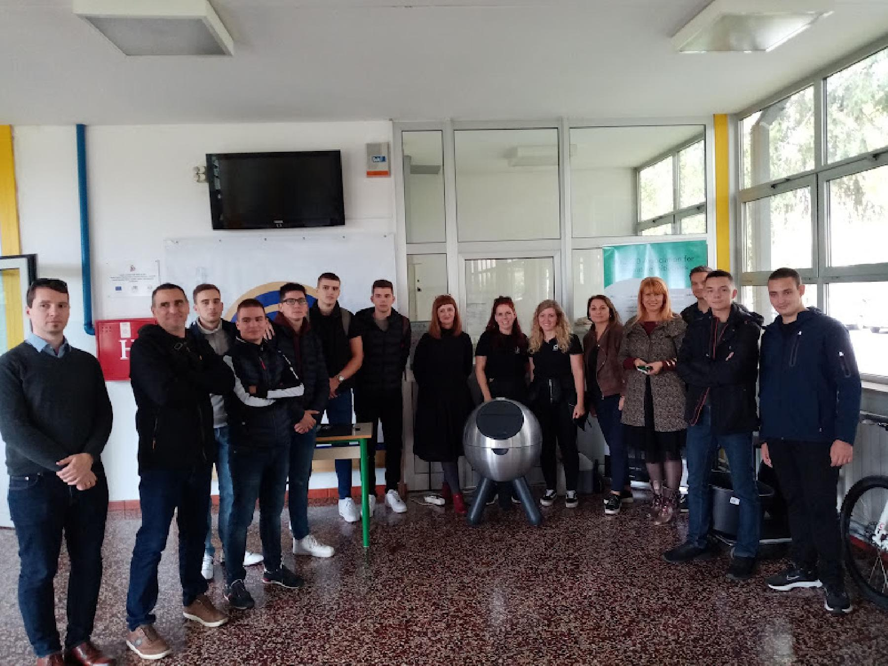
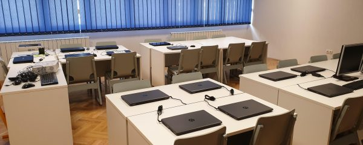

DSD program (Deutsch Sprachdiplom) odnosi se na program pojačanog učenja njemačkog jezika
, a podrazumijeva jedan dodatni čas njemačkog svake sedmice, i mogućnost polaganja i dokazivanja
znanja na B2/C1 nivou. Naša škola je samo jedna od mnogih DSD škola u svijetu.

Opći smjer
Pokaži više
Opći smjer postoji još od osnivanja škole, a predstavlja program uobičajen za škole gimnazijskog tipa,
s ciljem da stvara generacije uspješnih i obrazovanih ljudi i služi kao savršena podloga za fakultet, pogotovo za one učenike koji
još nisu sigurni čime se žele nastaviti baviti nakon školovanja. Sve četiri godine učenici imaju predmete kao što su historija, geografija
, biologija, hemija, fizika i ostali, a pored toga i prve dvije godine latinski jezik. #budiitigimnazijalac

Novi program
Pokaži više
Novi program se od općeg programa razlikuje u jednom ključnom detalju - napravljen je za one koji se žele usmjeriti i
detaljnije izučavati sljedeće predmete i oblasti:
Društveno područje
Jezičko područje
Matematičko-informatičko područje
Sportsko područje
Prirodno područje
Usmjerenja učenici biraju tek nakon prve dvije godine, a prije toga svi pohađaju iste časove, a koji uključuje sve ono što sadrži opći smjer u sve četiri
godine, ali ubrzano i kompaktno iznešeno. Posljednjih godina škola je dobila razne donacije u vidu tehničke opreme, pa sada ima dobro opremljenu sportsku salu,
kabinet informatike, laboratorije za fiziku, hemiju i biologiju, što samo podiže nivo nastave i čini je zanimljivijom. Još jedna činjenica zbog koje učenici
upisuju ovaj smjer je što je ukupan fond sati dosta manji u prosjeku, pa učenici imaju više slobodnog vremena.

Računarsko-informatički smjer
Pokaži više
Smjer je uveden 2018. godine zbog sve većeg razvoja IT sektora i
interesa naših učenika. Drugačiji je od matematičko-informatičkog izbornog područja, neki od
predmeta svojstvenih za ovaj smjer uključuju (raspoređeni kroz sve 4. godine)
OOM (Odabrane oblasti matematike) - primjera radi, u 4. razredu učenici imaju 7 sati matematike
jer je ona nezaobilazna kad je programiranje u pitanju.
Uvod u programiranje
Programski jezici (Java, C#)
Računarske mreže
Primjerna računara
Operativni sistemi
Web dizajn
Web tehnologije
Informacioni sistemi i baze podataka
Do sada velika većina učenika koji završe ovaj smjer dobiju poziv za praksu ili zaposlenje u firmama
unutar BiH, a ostali nastave svoje studije na predmetima vezanim uz informatiku u državama Europe
kao što su Austrija, Srbija, Hrvatska, Njemačka...